Proveedores, modelos y tu clave de IA
Qué hay detrás de un chat de IA, cuánto cuesta de verdad y cómo usarla con tu propia clave sin perder el control del gasto ni de los datos de tu investigación.
Fernando Borrás Rocher · Universidad Miguel Hernández de Elche
Al acabar la sesión tendrás
Criterio
Qué hay detrás de un chat de IA, quién fabrica los modelos y cómo se elige uno según la tarea, el coste y los datos.
Tu clave
Una clave de API de OpenAI con saldo, tope de gasto y la recarga automática apagada.
La ficha de tu proyecto
Pregunta, tipo de estudio, datos, convocatoria y revista: el hilo que recorre las cuatro sesiones siguientes.
25 conceptos en cuatro actos

La infraestructura detrás del chat
Qué es un modelo de lenguaje, quién los fabrica y por qué en este curso no usamos el chat, sino la API con tu clave.
Escribes un texto. El modelo devuelve otro.
Todo lo que hace la IA generativa empieza igual:
- Prompt (entrada): lo que le pides, con el material que le das.
- Respuesta (salida): el texto que genera.
La calidad de la respuesta depende mucho del prompt y del material. Las apps del curso ya llevan los prompts escritos y probados.
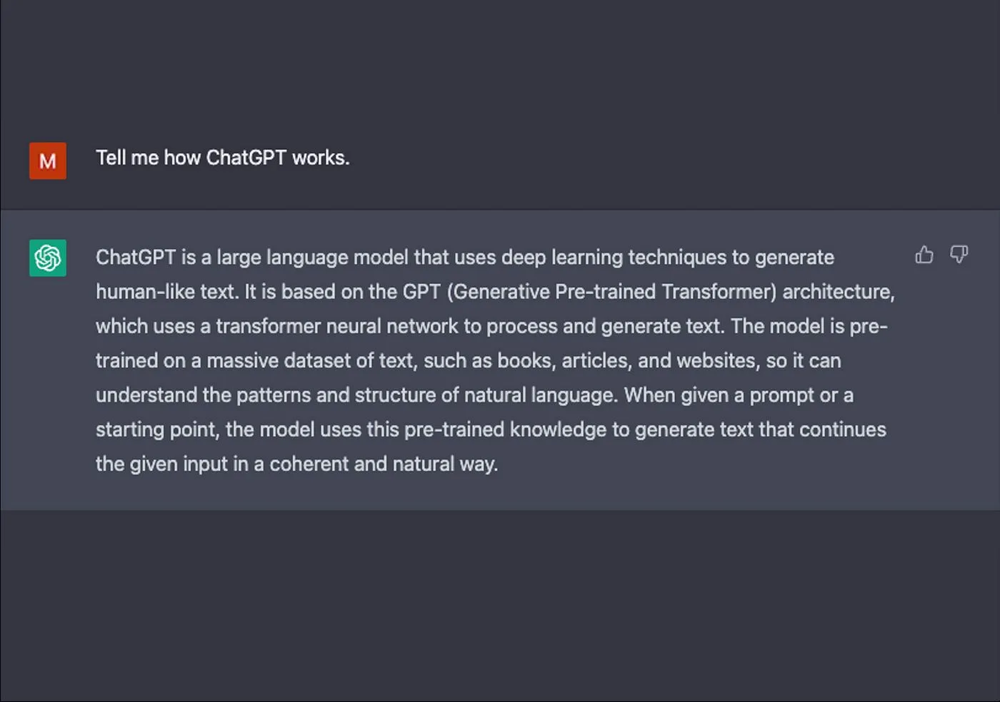
Un modelo de lenguaje predice la siguiente palabra
«Los pacientes con enfermedad renal crónica tienen mayor riesgo de ___»
Probabilidades inventadas para ilustrar. Pulsa una palabra para completar la frase.
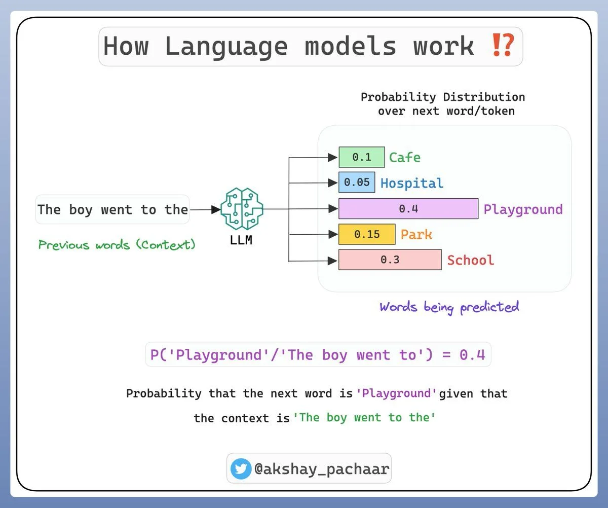
Quién fabrica los modelos
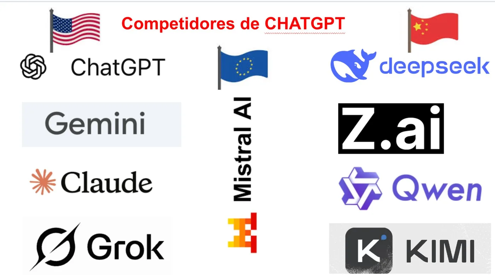
- Estados Unidos: OpenAI (ChatGPT), Google (Gemini), Anthropic (Claude), xAI (Grok).
- Europa: Mistral AI (Francia).
- China: DeepSeek, Alibaba (Qwen), Moonshot (Kimi), Z.ai.
En la nube o en tu ordenador
Modelos cerrados, en la nube
GPT, Gemini, Claude. Los más capaces. Se usan a través de internet y se paga por uso.
Modelos abiertos, en local
Llama, Mistral, Qwen, Gemma… con programas como Ollama. Los datos no salen del ordenador, pero hace falta un equipo potente.
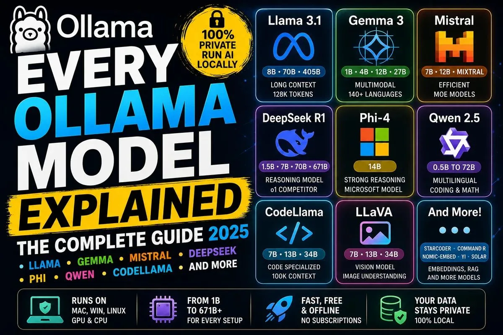
Suscripción o clave de API
La app de chat (ChatGPT Plus, Gemini, Claude Pro). Cuota fija, con límites de uso. Cómoda para conversar, pero cada tarea se hace a mano, copiando y pegando.
Se paga por la cantidad de texto procesado. La clave conecta el modelo con apps como las del curso, que hacen el trabajo por pasos y lo comprueban.
Qué es una API y por qué la usan las apps del curso
Una API es la puerta por la que un programa habla directamente con el modelo, sin pasar por la web del chat. La clave identifica quién paga.
Tu navegador
La app del curso (un solo archivo) y tu clave, guardada solo ahí.
El proveedor
OpenAI, Google o Anthropic recibe la petición y cobra los tokens a tu cuenta.
La respuesta
Vuelve a la app, que comprueba referencias y cifras antes de enseñártela.
La economía del modelo
Tokens, precio por millón, modelos grandes y pequeños, y cuánto cuesta de verdad resumir un artículo o mejorar una memoria.
El modelo no lee palabras: lee tokens
El texto se trocea en fragmentos llamados tokens: palabras cortas enteras y trozos de las largas.
Ejemplo ilustrativo:
La hipertensión arterial es frecuente
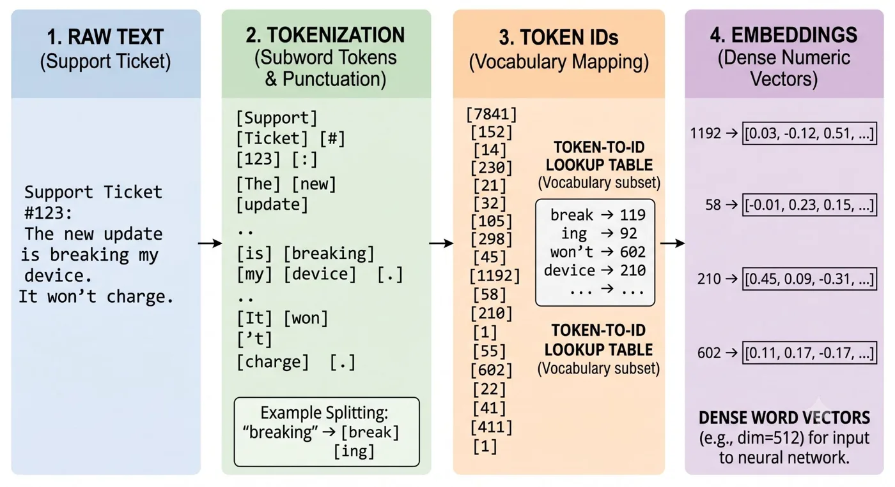
Se paga lo que envías y lo que recibes
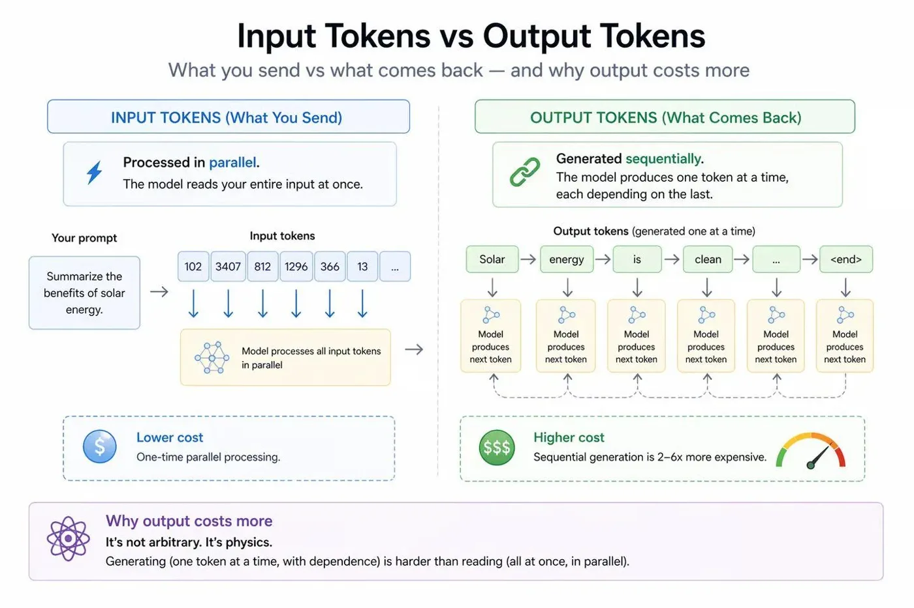
- Entrada: las instrucciones y tus documentos. Se procesa de golpe.
- Salida: la respuesta. Se genera token a token, y por eso cuesta unas 5 veces más.
De un modelo a otro, el precio cambia 100 veces
| Modelo de OpenAI | En investigación | Entrada | Salida |
|---|---|---|---|
| GPT-6 Luna | Tareas acotadas: resumir, clasificar, extraer datos | 0,10 $ | 0,50 $ |
| GPT-6.1 Terra | Trabajo diario: síntesis, tablas, borradores | 1 $ | 5 $ |
| GPT-6.1 Sol | Trabajo exigente: memoria de un proyecto, revisión | 2 $ | 10 $ |
| GPT-6 Astra | El razonamiento más exigente; rara vez hace falta | 10 $ | 50 $ |
Dólares por millón de tokens. Un millón de tokens son unas 2.000 páginas.
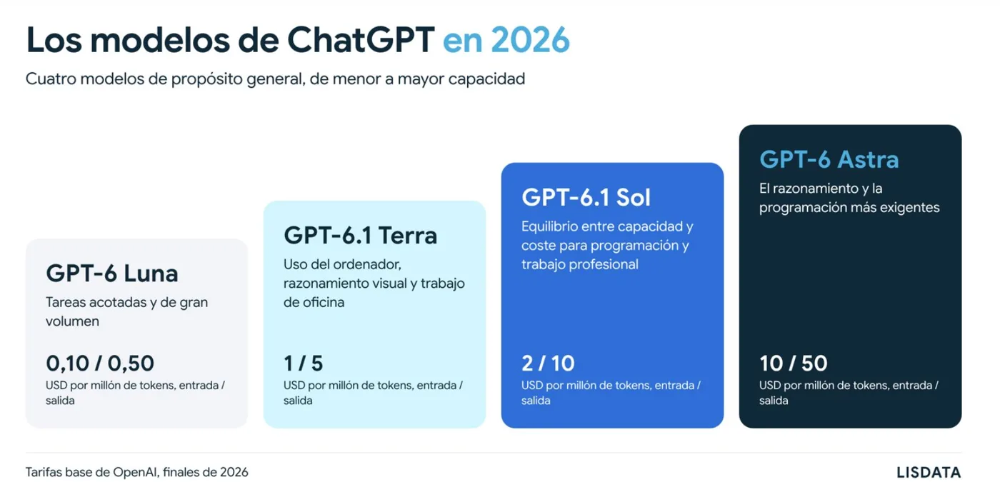
¿Cuánto cuesta una tarea de investigación?
Una sesión entera de prácticas: 3 céntimos
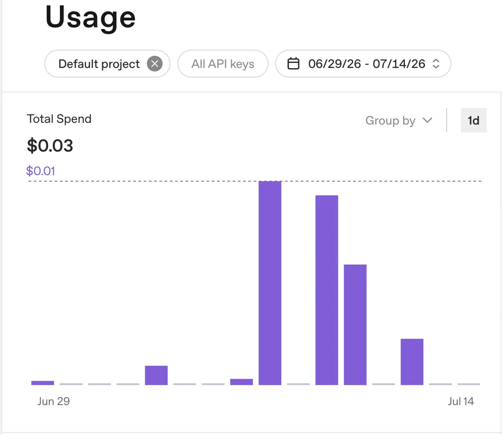
El panel Usage muestra lo gastado cada día. Míralo después de cada sesión del curso: es la mejor manera de perderle el miedo al coste.
Criterios de elección
Capacidad, coste, ventana de contexto, ajustes del modelo, privacidad y uso ético: lo que conviene mirar antes de elegir un modelo para una tarea.
La IA y el examen MIR: del 51 % al 97 % en tres años
Aciertos en el examen MIR de cada año (en 2026, con imágenes). Mejor modelo evaluado.
No hace falta el modelo más caro
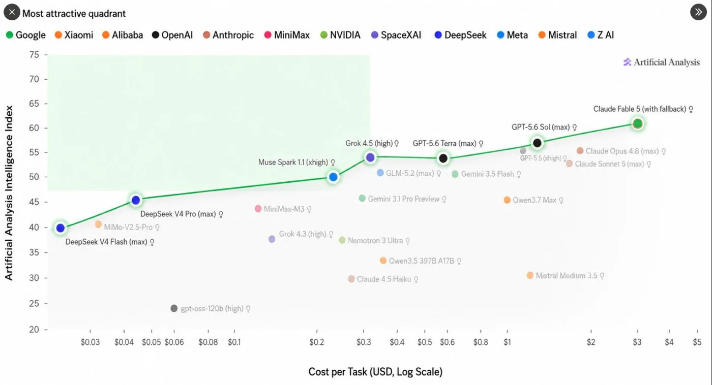
Los modelos de la zona sombreada dan casi la misma calidad que los mejores por una fracción del precio.
La ventana de contexto: cuánto texto cabe en una petición
tokens ≈ 750 palabras ≈ 2 o 3 páginas
tokens ≈ 250 páginas: una tesis doctoral
tokens en GPT-6 ≈ más de 2.000 páginas
Lo que las apps ajustan por ti
Temperatura baja
Respuestas estables y repetibles: extraer datos, cribar, revisar cifras.
Temperatura media
Redactar secciones, resumir, reescribir con estilo.
Temperatura alta
Ideas variadas, con más riesgo de inventar.
Eres un experto lector de artículos
científicos. Analiza el paper y
responde en JSON estricto:
{
"title": "título detectado",
"sections": ["lista", "de", "secciones"],
"type": "experimental/review/…",
"year": "año si disponible"
}
PAPER: {{paper_text}}
Datos de salud: categoría especial
- El RGPD (art. 9) protege especialmente los datos de salud, que son la materia prima de la investigación sanitaria.
- Por API, los datos no se usan para entrenar los modelos por defecto. Aun así, salen de tu ordenador.
- Nunca envíes historias clínicas ni datos de pacientes que permitan identificarlos.
Antes de subir un conjunto de datos
✓ Quita nombres, NHC, DNI, teléfonos y direcciones.
✓ Cambia fechas exactas por edad o año.
✓ Usa códigos de estudio, no identificadores.
✓ Comprueba que el uso está cubierto por el comité de ética y el consentimiento.
Cuatro normas de uso
Revisa
Todo lo que genera la IA pasa por ti antes de entrar en un manuscrito o una memoria. La firma es tuya.
Declara
Indica el uso de IA según las normas de la revista o de la convocatoria.
Protege
Anonimiza. Piensa dónde van los datos y quién podría verlos.
Verifica
Ninguna referencia ni cifra entra sin comprobarla en la fuente.
De la clave a las apps
Apps de un solo archivo que usan tu clave: las doce del curso, sesión a sesión.
Apps de un solo archivo, con tu clave
- Una página web que se abre en el navegador. Sin instalar nada y sin servidor.
- Llevan dentro los prompts, los pasos y las comprobaciones. Solo hay que poner la clave.
- La IA propone, el código comprueba: las referencias se buscan en bases reales y las cifras se auditan contra los datos.
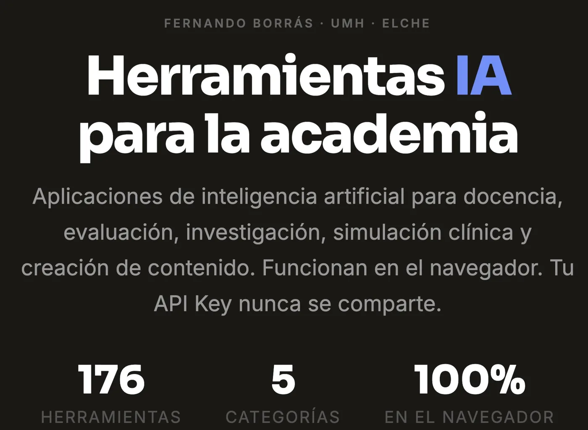
Cuatro sesiones, doce apps, un proyecto

Publication Radar · Doctoralia · PRISMIA
Vigilar revistas, sintetizar el estado del arte y cribar con PRISMA.
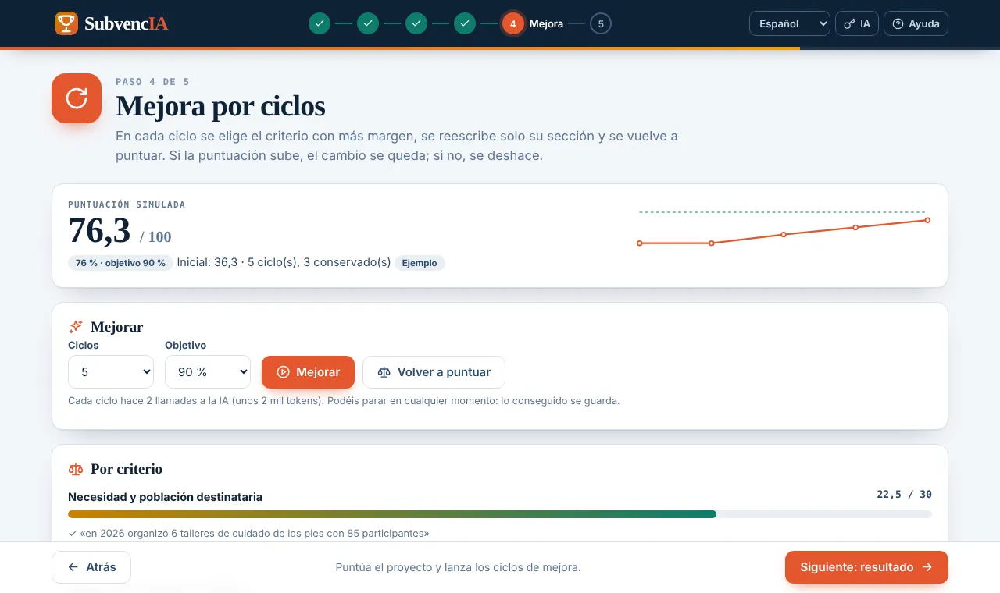
FronterIA · GrantWriter · SubvencIA
De la pregunta a la propuesta, la memoria y la rúbrica de la convocatoria.
CuadernIA · NarrativIA · RefinIA
Del CSV al cuaderno Jupyter, a la sección de Resultados y a la verificación del manuscrito.

RevistaFit · AdaptIA · ArbitrIA
Elegir revista, adaptar el manuscrito a sus normas y simular la revisión.
La ficha de tu proyecto recorre las cinco sesiones
Sesión 2
La pregunta guía la búsqueda y el estado del arte.
Sesión 3
El estado del arte sostiene la memoria para la convocatoria.
Sesión 4
Los datos se convierten en cuaderno y en Resultados.
Sesión 5
El manuscrito llega a la revista elegida.
Práctica: tu clave y la ficha de tu proyecto
Seis pasos. Hazlo sentado, con la tarjeta y el móvil a mano: OpenAI pide verificar un número de teléfono.
Tu clave: seis reglas
Es una tarjeta de crédito
Nunca en un correo, un chat, una diapositiva, un documento compartido ni un repositorio.
Con tope de gasto
Presupuesto mensual bajo y aviso por correo antes de llegar.
Sin recarga automática
Es la forma más común de gastar de más sin enterarse.
Una clave con nombre
Por ejemplo, curso-isabial. Si se filtra, se revoca sin afectar a nada más.
Modelo según la tarea
Económico por defecto; potente solo cuando haga falta.
Si se ve, revócala
Borrarla y crear otra es gratis y se hace en diez segundos.
Cuenta en la plataforma y 5 $ de saldo
1 Entra en platform.openai.com (la plataforma de desarrollo, no ChatGPT). Si ya usas ChatGPT, entra con la misma cuenta. Verifica el correo y el móvil.
2 Settings → Billing → Add payment method. Añade el mínimo, 5 $. Sin saldo, la clave existe pero no responde.
Esquema de la pantalla: la real puede cambiar en detalles.
Tope de gasto y la clave
3 En Limits: presupuesto mensual de 5 $ y aviso por correo al llegar a 4 $.
4 En platform.openai.com/api-keys → Create new secret key. Nombre: curso-isabial.
sk-proj- y se muestra una sola vez. Cópiala en ese momento y guárdala en el gestor de contraseñas del navegador.Save your key
No volverás a ver esta clave.
Esquema de la pantalla.
Pégala en una app y elige modelo
- Abre Doctoralia (o cualquier app del curso) y pulsa el botón de la clave 🔑 en la barra de arriba.
- Elige OpenAI y pega la clave. Cuidado con los espacios al principio o al final.
- Carga la lista de modelos de tu clave y elige uno económico, por ejemplo GPT-6 Luna.
- Lanza una prueba corta. Si responde, ya está.
Escribe la ficha de tu proyecto
Pregunta de investigación
En una o dos frases.
Campo y tipo de estudio
Área, diseño y población.
Datos disponibles
Qué tienes ya (anonimizado) o qué conjunto de ejemplo usarás.
Convocatoria y revista
La convocatoria para la sesión 3 y la revista candidata, si la tienes.
Si algo se atasca
He perdido la clave
No se recupera. En api-keys, borra la antigua y crea otra.
insufficient_quota
La clave es correcta, pero no hay saldo. Vuelve al paso 2.
incorrect API key
Casi siempre, un espacio al copiar. Borra el campo y pega de nuevo.
Tengo ChatGPT Plus
No sirve: la suscripción no incluye la API. Hay que cargar saldo igualmente.
La tarjeta institucional no pasa
Sirve una tarjeta personal, de prepago o un monedero virtual.
No tengo clave todavía
Sigue la sesión con los ejemplos de las apps y crea la clave antes de la sesión 2.
Qué traer (anonimizado)
Tu pregunta de investigación y, si la tienes, una búsqueda previa exportada en RIS o CSV.
Las bases de una convocatoria abierta (PDF) y el esquema o borrador de tu proyecto.
Un conjunto de datos anonimizado en CSV o Excel con su diccionario de variables, y un borrador de manuscrito.
Tu manuscrito y las normas para autores de la revista candidata.
La IA propone, el código comprueba y tú decides.
- Un modelo predice lo probable: verifica siempre referencias y cifras.
- Por API se paga por uso: céntimos con un modelo económico y un tope de gasto.
- Datos de salud: anonimiza antes de enviar.
Portal del curso, apps y normas: fborrasumh.github.io/isabial